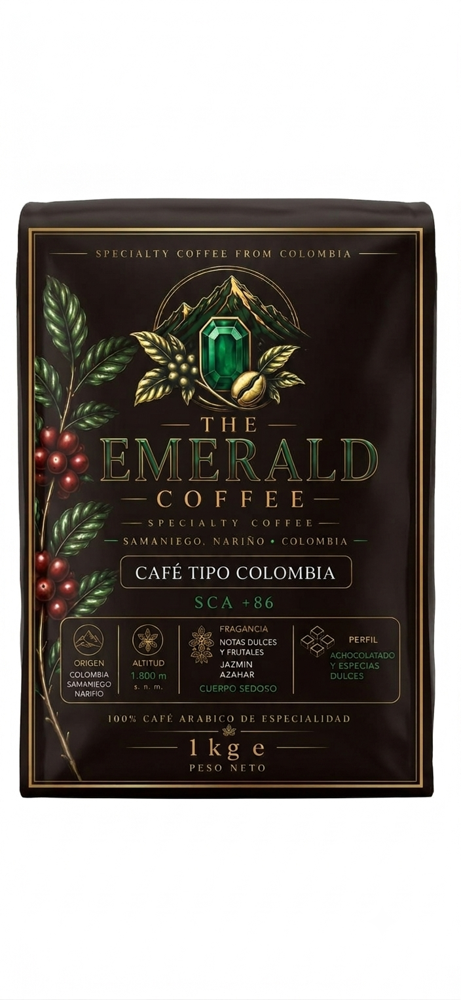
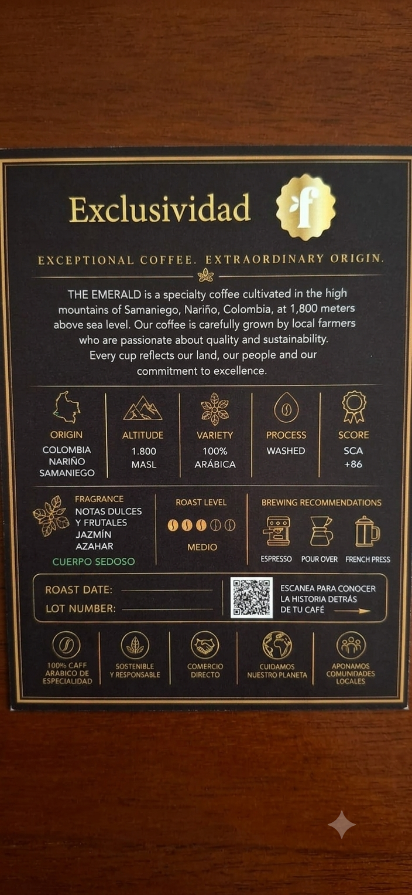
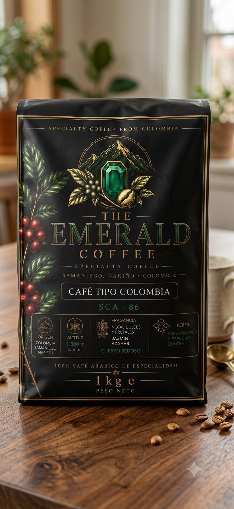

El café
Presentación de 1 kg, pensada para cafeterías y distribuidores.
Empaque hermético con válvula, etiqueta con código QR de trazabilidad y ficha técnica impresa — la misma que reproducimos arriba en la web.

Empaque 1kg · Café tipo Colombia

Ficha técnica de la etiqueta

Tueste medio

Presentación de exportación
Preparación · Espresso · Filtrado · Prensa francesa